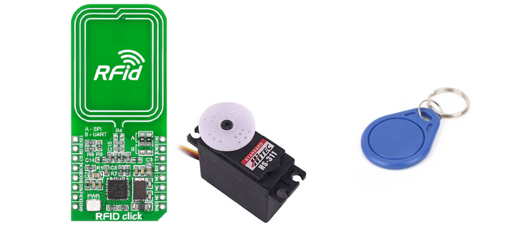

Contrôle d’accès par badge RFID
Projet microcontrôleur : lecture d’un badge RFID, décodage des trames, puis commande d’un servo-moteur pour simuler l’ouverture d’une porte.
Description
L’objectif est de réaliser un système complet de contrôle d’accès : identification d’un badge, validation des droits, puis déclenchement d’une action (servo) avec une logique robuste.
Fonctionnalités clés
- Programmation du microcontrôleur (structure claire, gestion des états)
- Gestion du module RFID : lecture + récupération de l’ID
- Communication UART : réception et parsing des trames
- Interprétation des trames ISO / formatage des données
- Commande du servo-moteur pour l’ouverture (PWM)
Résultat
À la détection d’un badge autorisé, le système déclenche l’ouverture (servo) et gère les cas d’erreur (badge inconnu, lecture invalide, timeout).
